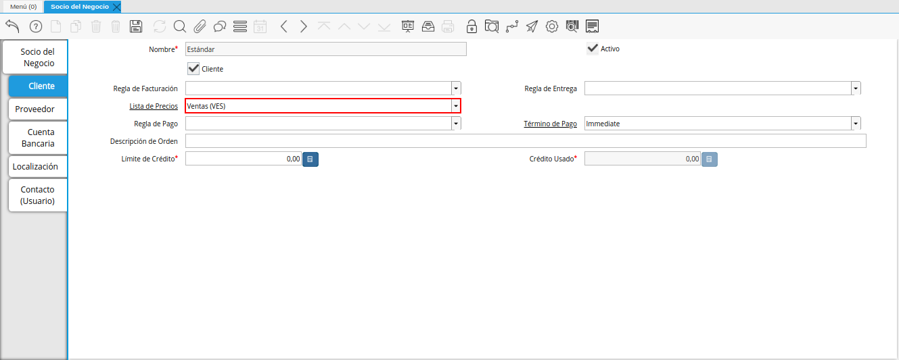
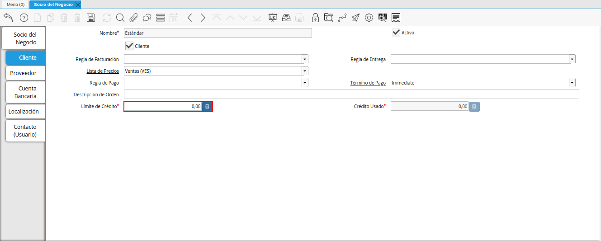
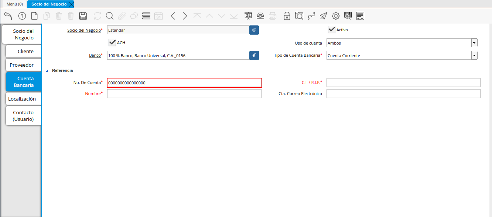
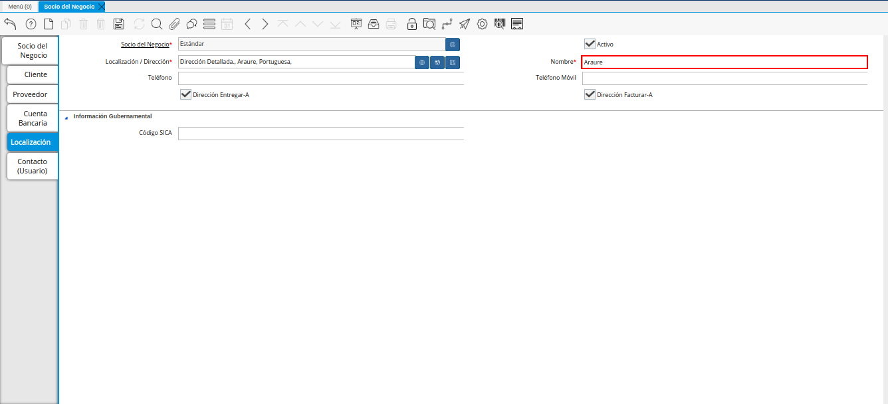
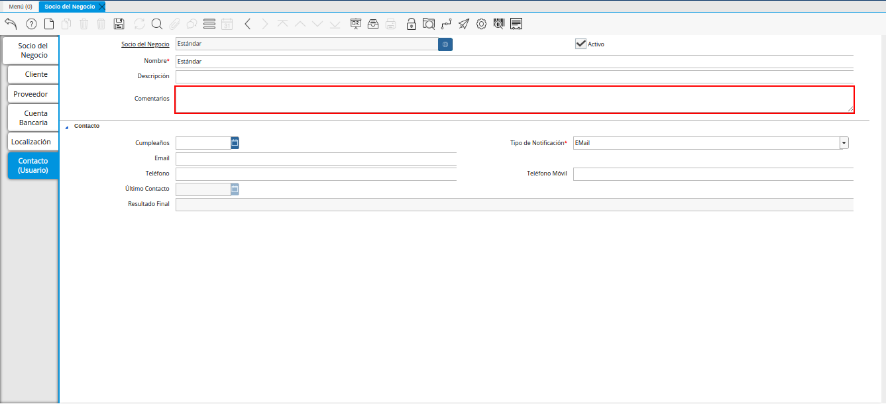

2.1.1.2.1. Registro de Cliente¶
Para registrar un cliente, es necesario que sea realizado el procedimiento regular explicado en el documento Registro de Socio del Negocio, elaborado por ERPyA.
Luego de culminar el procedimieto de registro de socio del negocio, seleccione la pestaña “Cliente” que se encuentra del lado izquierdo de la ventana socio del negocio, para identificar al socio del negocio como cliente de la empresa.
En esta pestaña es registrada la información que la empresa requiere del socio del negocio cliente al momento de una venta al mismo. Cada uno de los campos que la misma contiene son necesarios en algún punto de la transacción de ventas.

Imagen 1. Pestaña Cliente
A continuación visualizará la siguiente imagen, dónde debe tildar el checklist “Cliente”.

Imagen 2. Checklist Cliente
Warning
Al tildar el checklist “Cliente”, podrá apreciar diferentes campos que establecen los términos o reglas para las transacciones de ventas al socio del negocio cliente que esta registrando. Dichos campos no son obligatorios porque pueden ser establecidos al momento de generar la orden de venta al socio del negocio.
Seleccione en el campo “Regla de Facturación”, la regla establecida para facturar al socio del negocio cliente.

Imagen 3. Campo Regla de Facturación
Seleccione en el campo “Regla de Entrega”, la regla establecida para entregar al cliente los productos o servicios.

Imagen 4. Campo Regla de Entrega
Seleccione en el campo “Lista de Precios”, la lista de precios establecida para las ventas al socio del negocio cliente que esta registrando.

Imagen 5. Campo Lista de Precios
Seleccione en el campo “Regla de Pago”, la forma de pago de las facturas establecida para el socio del negocio cliente que esta registrando.

Imagen 6. Campo Regla de Pago
Seleccione en el campo “Término de Pago”, las condiciones de pago de las facturas establecida para el socio del negocio que esta registrando.

Imagen 7. Campo Término de Pago
Introduzca en el campo “Descripción de Orden”, una descripción estándar para se utilizadas en las órdenes a generar al socio del negocio cliente que esta registrando.

Imagen 8. Campo Descripción de Orden
Introduzca en el campo “Límite de Crédito”, el límite de crédito establecido para el socio del negocio cliente que esta registrando.

Imagen 9. Campo Límite de Crédito
Podrá visualizar en el campo “Crédito Usado”, el crédito usado por el socio del negocio cliente que esta registrando.

Imagen 10. Campo Crédito Usado
Warning
Recuerde guardar el registro de los campos cada vez que se vaya a posicionar en una pestaña de la ventana socio del negocio.
2.1.1.2.1.1. Pestaña Cuenta Bancaria¶
En esta pestaña se registran los datos bancarios del socio del negocio cliente, con el checklist “ACH” se pueden registrar los datos de la cuenta bancaria del socio del negocio.
Seleccione la pestaña “Cuenta Bancaria” que se encuentra ubicada del lado izquierdo de la ventana socio del negocio. Por defecto se encuentra tildado el checklist “Activo”.

Imagen 11. Pestaña Cuenta Bancaria
2.1.1.2.1.1.1. Checklist ACH¶
Para registros de cuentas bancarias, tilde el checklist “ACH”, a continuación se reflejarán los campos para el registro de la cuenta bancaria del socio del negocio.

Imagen 12. Checklist ACH
Seleccione en el campo “Uso de Cuenta”, la opción que define como es usada la cuenta banco del socio del negocio.

Imagen 13. Campo Uso de Cuenta
En el campo “Banco” seleccione el banco a registrar con ayuda del ícono identificador (adjunto imagen).

Imagen 14. Campo Banco
A continuación visualizará la siguiente ventana con los diferentes bancos, dónde debe seleccionar el banco que posee el socio del negocio cliente y la opción “OK” para cargar los datos al formulario.

Imagen 15. Opción OK
Seleccione el tipo de cuenta correspondiente a la cuenta del socio del negocio cliente en el campo “Tipo de Cuenta Bancaria”.

Imagen 16. Campo Tipo de Cuenta Bancaria
Introduzca en el campo “No. De Cuenta”, el número de cuenta del socio del negocio cliente que esta registrando.

Imagen 17. Campo No. De Cuenta
Warning
Este proceso se realiza con la finalidad de registrar la cuenta del socio del negocio.
Introduzca en el campo “C.I./R.I.F.”, el número de cédula o registro de información fiscal del titular de la cuenta bancaria que esta registrando.

Imagen 18. Campo C.I./R.I.F. del Titular de la Cuenta
Introduzca el nombre de referencia en el campo “Nombre”, en este campo va el nombre del titular de la tarjeta de crédito o de la cuenta bancaria que esta registrando.

Imagen 19. Campo Nombre de Titular de Cuenta
Introduzca en el campo “Cta. Correo Electrónico”, la cuenta de correo electrónico del titular de la cuenta bancaria que esta registrando.

Imagen 20. Campo Cta Correo Electrónico del Titular de la Cuenta
Seleccione el icono “Guardar Cambios” ubicado en la barra de herramientas para guardar los datos ingresados.

Imagen 21. Icono Guardar Cambios de la Pestaña Cuenta Bancaria
Warning
Este proceso se realiza con la finalidad de registrar la cuenta bancaria del socio del negocio cliente.
2.1.1.2.1.2. Pestaña Localización¶
La localización de un socio del negocio cliente es muy importante por diferentes motivos, ya que las transacciones de ventas serán realizadas al mismo, en esta pestaña se deben registrar con exactitud los datos de la dirección del socio del negocio.
Seleccione la pestaña “Localización” que se encuentra ubicada del lado izquierdo de la ventana socio del negocio.

Imagen 22. Pestaña Localización
Introduzca en el campo “Localización / Dirección”, la dirección de localización del socio del negocio cliente con ayuda del identificador.

Imagen 23. Campo Localización / Dirección
A continuación visualizará la siguiente ventana, dónde debe introducir la dirección exacta del socio del negocio cliente que esta registrando.

Imagen 24. Ventana de Localización
Introduzca en el campo “Nombre”, el nombre de la localización del socio del negocio.

Imagen 25. Campo Nombre
Note
Si no es ingresado ningún valor en este campo, al guardar el registro de la ventana, ADempiere toma el valor ingresado en el campo “Dirección 1”, de la ventana desplegada por el identificador del campo “Localización/Dirección”.
Introduzca en el campo “Teléfono”, el número de teléfono local para contactar al socio del negocio cliente.

Imagen 26. Campo Teléfono
Introduzca en el campo “Teléfono Móvil”, el número de teléfono móvil para contactar al socio del negocio cliente.

Imagen 27. Campo Teléfono Móvil
Podrá apreciar tildados los checklist “Dirección Entregar-A” y “Dirección Facturar-A”, indicando cada uno de ellos un comportamiento diferente.
El checklist “Dirección Entregar-A” establece la localización ingresada como la dirección para embarcar los bienes.

Imagen 28. Campo Dirección Entregar-A
El checklist “Dirección Facturar-A” establece la localización ingresada como la dirección para facturar.

Imagen 29. Campo Dirección Facturar-A
Introduzca en el campo “Código SICA”, el código SICA del socio del negocio cliente.

Imagen 30. Campo Código SICA
Seleccione el icono “Guardar Cambios” ubicado en la barra de herramientas para guardar los datos ingresados.

Imagen 31. Icono Guardar Cambios de la Pestaña Localización
Warning
Recuerde guardar el registro de los campos cada vez que se vaya a posicionar en una pestaña de la ventana socio del negocio.
2.1.1.2.1.3. Pestaña Contacto¶
En esta pestaña se registran todos los datos de contacto que se posea el socio del negocio cliente.
Seleccione la pestaña “Contacto” que se encuentra ubicada del lado izquierdo de la ventana socio del negocio, para proceder a llenar los campos necesarios.

Imagen 32. Pestaña Contacto
Warning
El contacto (Usuario) permite registrar las diferentes personas de contacto que tiene la empresa con el socio del negocio cliente que esta registrando. Un ejemplo de esta pestaña puede ser, un jefe o persona de contacto por departamento para que a la hora de alguna venta de productos o servicios al socio del negocio cliente, se contacte a la persona correspondiente.
Introduzca en el campo “Nombre”, el nombre completo de la persona de contacto con el socio del negocio cliente que esta registrando.

Imagen 33. Nombre de Contacto
Introduzca en el campo “Descripción”, una breve descripción de la persona de contacto con el socio del negocio cliente que esta registrando.

Imagen 34. Campo Descripción
Introduzca en el campo “Comentarios”, los comentarios o información adicional sobre el registro de la persona de contacto con el socio del negocio cliente.

Imagen 35. Campo Comentarios
Seleccione en el campo “Cumpleaños”, la fecha de nacimiento de la persona de contacto con el socio del negocio.

Imagen 36. Campo Cumpleaños
Seleccione en el campo “Tipo de Notificación”, el tipo de notificación para los correos o avisos.

Imagen 37. Campo Tipo de Notificación
Introduzca en el campo “Email”, el correo electrónico de la persona de contacto con el socio del negocio para las transacciones entre las empresas.

Imagen 38. Campo Email
Introduzca en el campo “Teléfono”, el teléfono para localizar a la persona de contacto con el socio del negocio para las transacciones entre las empresas.

Imagen 39. Campo Teléfono de Contacto
Introduzca en el campo “Teléfono Móvil”, el teléfono móvil para localizar a la persona de contacto con el del socio del negocio.

Imagen 40. Campo Teléfono Móvil
Podrá visualizar en el campo “Último Contacto”, la última vez que fue contactado el individuo de contacto del socio del negocio.

Imagen 41. Campo Último Contacto
Podrá visualizar en el campo “Resultado Final”, el resultado del último contacto realizado al individuo de contacto del socio del negocio.

Imagen 42. Campo Resultado Final
Seleccione el icono “Guardar Cambios” en la barra de herramientras de ADempiere, para guardar el registro de los campos.

Imagen 43. Icono Guardar Cambios
Note
Este procedimiento realizado aplica solo para los Socios del Negocio que cumplan el rol de Cliente.